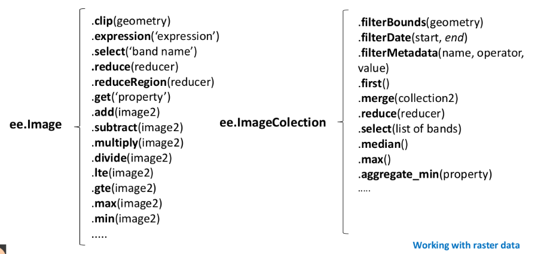
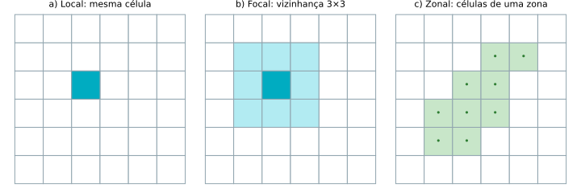
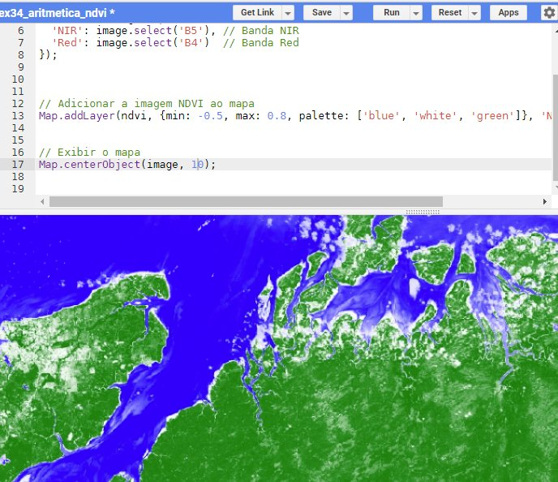
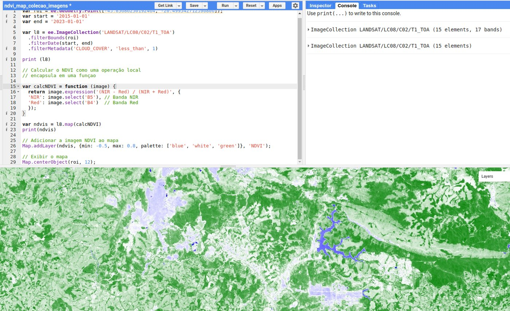
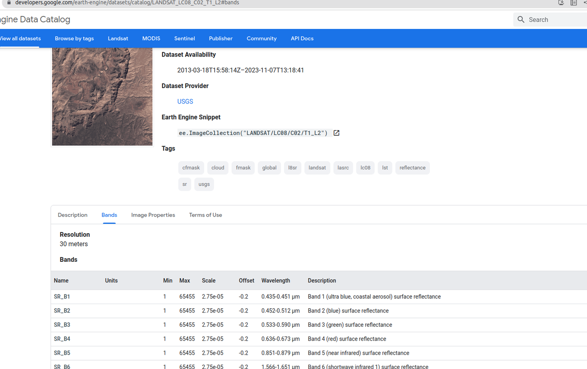
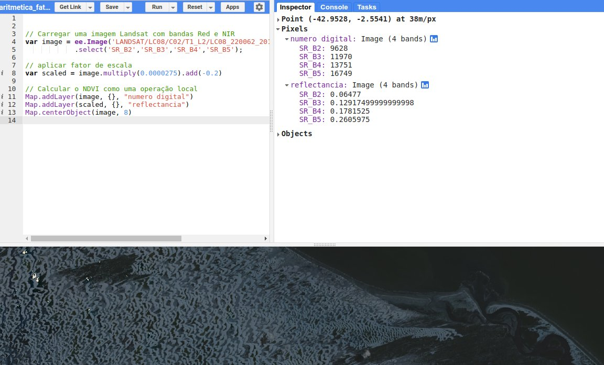
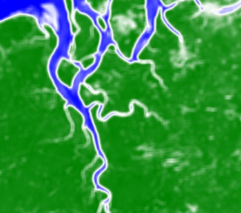
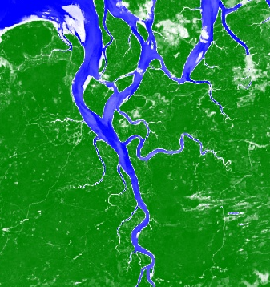
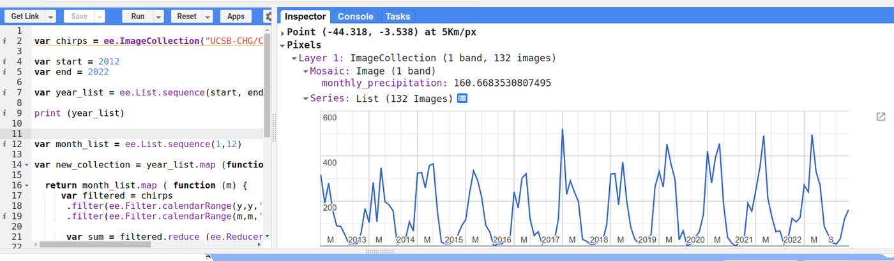
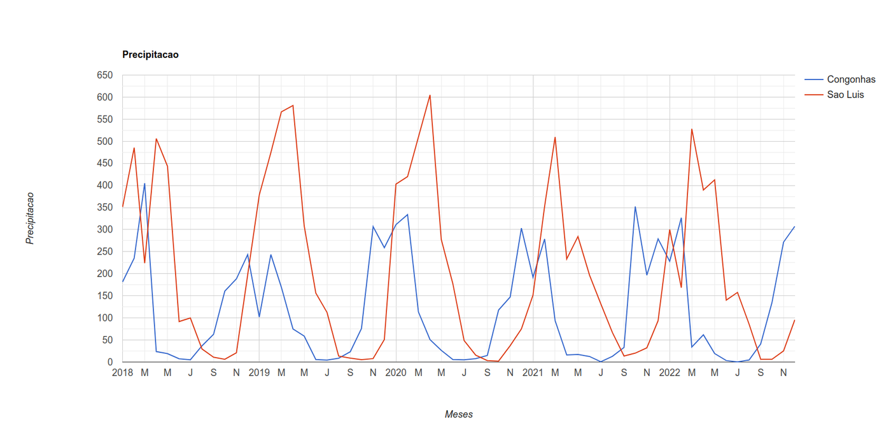

Processamento de Dados Matriciais¶
Assim como nos dados vetoriais, algumas operações são aplicadas a uma imagem (ee.Image) e outras a uma coleção de imagens (ee.ImageCollection):

Muitas das operações sobre dados matriciais são melhor entendidas dentro do conceito de álgebra de mapas (TOMLIN, 1990). Neste capítulo, usamos esse conceito para organizar as operações do GEE, calculamos índices espectrais, pré-processamos imagens, construímos séries temporais e damos um primeiro passo na classificação de imagens.
🧮 Álgebra de mapas¶
Tomlin (1990) classifica as operações sobre mapas matriciais pela origem dos valores usados para calcular cada célula do mapa de saída:
- Operações locais: o valor de uma localização no mapa de saída é calculado a partir dos valores da mesma localização em um ou mais mapas de entrada. Incluem expressões aritméticas e lógicas, como "classificar como alto risco todas as áreas sem vegetação com declividade superior a 15%".
- Operações focais: o valor de uma localização no mapa de saída é calculado a partir dos valores da vizinhança dessa localização no mapa de entrada. Incluem expressões como "calcular a média local dos valores do mapa".
- Operações zonais: o valor é calculado a partir de todas as células de uma zona, sendo as zonas definidas por um segundo mapa. Incluem expressões como "dado um mapa de municípios e um modelo digital de terreno, calcular a altitude média de cada município".

A essas três pode-se acrescentar uma quarta, as operações globais, que usam o conjunto de dados inteiro.
📍 Operações locais¶
Operadores locais atuam sobre células individuais, sem considerar as vizinhas. Incluem as operações aritméticas básicas (adição, subtração, multiplicação, divisão) e funções como logaritmo, exponenciação, raiz quadrada e operações trigonométricas e lógicas. No GEE, são métodos das imagens:
var soma = imagem1.add(imagem2); // imagem1 + imagem2, pixel a pixel
var raiz = imagem.sqrt(); // raiz quadrada de cada pixel
var mascara = imagem.gt(0.3); // 1 onde o pixel > 0,3; 0 caso contrário
Índices espectrais: o NDVI¶
O exemplo mais clássico de operação local é o NDVI (Normalized Difference Vegetation Index), amplamente usado para avaliar a presença e o vigor da vegetação:
em que NIR é o valor do pixel na banda do infravermelho próximo e Red o valor na banda do vermelho. O resultado varia de −1 a 1: valores próximos de 1 indicam vegetação densa e sadia; próximos de 0, áreas com pouca ou nenhuma vegetação (solo exposto, áreas construídas); e valores negativos estão associados a corpos d'água. A explicação está na assinatura espectral (Capítulo 2): a vegetação reflete muito o infravermelho próximo e absorve o vermelho.
No Landsat 8, a banda 5 é o infravermelho próximo (NIR) e a banda 4 é o vermelho (Red). O código a seguir mostra explicitamente a aritmética de bandas com .expression():
// Uma imagem Landsat 8 em reflectância no topo da atmosfera
var image = ee.Image('LANDSAT/LC08/C02/T1_TOA/LC08_220062_20190504');
// NDVI como operação local
var ndvi = image.expression('(NIR - Red) / (NIR + Red)', {
'NIR': image.select('B5'), // infravermelho próximo
'Red': image.select('B4') // vermelho
}).rename('NDVI');
Map.addLayer(ndvi, {min: -0.5, max: 0.8, palette: ['blue', 'white', 'green']}, 'NDVI');
Map.centerObject(image, 10);

Como a diferença normalizada é muito usada, o GEE oferece um atalho: image.normalizedDifference(['B5', 'B4']) produz o mesmo resultado.
Desafio: NDVI de uma coleção inteira
E se precisássemos calcular o NDVI de todas as imagens de uma coleção? Tente antes de abrir a resposta.
Resposta: usando o padrão map
Encapsulamos o cálculo em uma função e a aplicamos a cada imagem com .map():
var roi = ee.Geometry.Point([-43.85686250192464, -20.499542712390806]); // Congonhas, MG
var l8 = ee.ImageCollection('LANDSAT/LC08/C02/T1_TOA')
.filterBounds(roi)
.filterDate('2015-01-01', '2023-01-01')
.filter(ee.Filter.lt('CLOUD_COVER', 1));
print(l8);
// a função recebe uma imagem e retorna o seu NDVI
var calcNDVI = function (image) {
return image.normalizedDifference(['B5', 'B4']).rename('NDVI');
};
var ndvis = l8.map(calcNDVI);
print(ndvis); // uma coleção com o mesmo número de imagens
Map.addLayer(ndvis, {min: -0.5, max: 0.8, palette: ['blue', 'white', 'green']}, 'NDVI');
Map.centerObject(roi, 12);

E, completando o padrão filter–map–reduce, podemos reduzir a coleção a uma única imagem com o NDVI médio do período:
var ndviMedio = ndvis.mean();
Map.addLayer(ndviMedio, {min: -0.5, max: 0.8, palette: ['blue', 'white', 'green']}, 'NDVI médio');
Outros redutores úteis: .median(), .max(), .min() e .reduce(ee.Reducer.stdDev()).
Pré-processamento: reflectância de superfície e fator de escala¶
Os dados T1_TOA usados até aqui estão em reflectância no topo da atmosfera. Mas a atmosfera — vapor d'água, aerossóis — interfere no sinal e, portanto, no NDVI. Para análises mais rigorosas, usa-se a reflectância de superfície (Surface Reflectance, ou BOA — Bottom of Atmosphere), já corrigida dos efeitos atmosféricos. No catálogo, é a coleção LANDSAT/LC08/C02/T1_L2:

Esses dados, porém, não estão em reflectância: são inteiros que precisam ser convertidos com um fator de escala e um offset (deslocamento), informados na aba Bands do catálogo. Para as bandas ópticas do Landsat Collection 2, nível 2: \(\rho = DN \times 0{,}0000275 - 0{,}2\). É outra operação local:
var image = ee.Image('LANDSAT/LC08/C02/T1_L2/LC08_220062_20190504')
.select(['SR_B2', 'SR_B3', 'SR_B4', 'SR_B5']);
// aplica o fator de escala e o offset
var reflectancia = image.multiply(0.0000275).add(-0.2);
Map.addLayer(image, {}, 'Número digital');
Map.addLayer(reflectancia, {}, 'Reflectância');
Map.centerObject(image, 8);
Clique em um pixel com o Inspector aberto e compare os valores das duas camadas:

Juntando tudo: reflectância de superfície + NDVI de uma coleção
var roi = ee.Geometry.Point([-43.85686250192464, -20.499542712390806]);
var l8 = ee.ImageCollection('LANDSAT/LC08/C02/T1_L2')
.filterBounds(roi)
.filterDate('2015-01-01', '2023-01-01')
.filter(ee.Filter.lt('CLOUD_COVER', 5));
// fator de escala das bandas ópticas (SR_B*) e termais (ST_B*, em °C)
var aplicarEscala = function (image) {
var opticas = image.select('SR_B.').multiply(0.0000275).add(-0.2);
var termicas = image.select('ST_B.*').multiply(0.00341802).add(149.0).subtract(273.15);
return image.addBands(opticas, null, true)
.addBands(termicas, null, true);
};
var adicionarNDVI = function (image) {
var ndvi = image.normalizedDifference(['SR_B5', 'SR_B4']).rename('NDVI');
return image.addBands(ndvi);
};
var ndvis = l8
.map(aplicarEscala)
.map(adicionarNDVI)
.select('NDVI');
var ndviMedio = ndvis.mean();
Map.addLayer(ndviMedio, {min: -0.5, max: 0.8, palette: ['blue', 'white', 'green']}, 'NDVI médio');
Map.centerObject(roi, 12);
Observe o padrão: cada etapa de pré-processamento vira uma função, e as funções são encadeadas com .map().
Outro índice e máscaras: o NDWI¶
O NDWI (Normalized Difference Water Index, na versão de McFeeters, 1996) realça corpos d'água usando as bandas do verde e do infravermelho próximo:
Valores positivos indicam, em geral, água. Com uma operação lógica (também local!), criamos uma máscara e a aplicamos à imagem com .updateMask(), que torna transparentes os pixels em que a máscara vale 0:
var image = ee.Image('LANDSAT/LC08/C02/T1_L2/LC08_220062_20190504')
.select(['SR_B2', 'SR_B3', 'SR_B4', 'SR_B5']);
var sr = image.multiply(0.0000275).add(-0.2);
var ndwi = sr.normalizedDifference(['SR_B3', 'SR_B5']).rename('NDWI');
var agua = ndwi.gte(0); // 1 = água, 0 = não água
Map.addLayer(ndwi, {min: -0.8, max: 0.8, palette: ['brown', 'white', 'blue']}, 'NDWI');
Map.addLayer(sr.updateMask(agua.not()),
{bands: ['SR_B4', 'SR_B3', 'SR_B2'], min: 0, max: 0.2}, 'Terra (água mascarada)');
Map.centerObject(image, 9);
Centenas de índices prontos
O projeto Awesome Spectral Indices cataloga centenas de índices espectrais, com fórmulas padronizadas. O módulo spectral permite usá-los no GEE:
🔲 Operações focais¶
Operadores focais, também conhecidos como operadores de vizinhança, consideram uma vizinhança de células ao redor de cada célula. São usados para filtragem, suavização ou realce de características. Um exemplo comum é o filtro de média, que substitui o valor de cada célula pela média dos valores da vizinhança. No GEE, a vizinhança é definida por um kernel (núcleo), e o método .reduceNeighborhood() aplica um redutor a ela:
var ndviSuavizado = ndvi.reduceNeighborhood({
reducer: ee.Reducer.mean(),
kernel: ee.Kernel.square(1) // raio de 1 pixel = janela 3×3
});
O parâmetro de ee.Kernel.square é o raio
ee.Kernel.square(r) cria uma janela de \((2r + 1) \times (2r + 1)\) pixels: square(1) é uma janela 3×3; square(3) já é uma janela 7×7. Por padrão, o raio é medido em pixels.
Código completo:
var image = ee.Image('LANDSAT/LC08/C02/T1_TOA/LC08_220062_20190504');
var ndvi = image.normalizedDifference(['B5', 'B4']).rename('NDVI');
var ndviSuavizado = ndvi.reduceNeighborhood({
reducer: ee.Reducer.mean(),
kernel: ee.Kernel.square(1)
});
var vis = {min: -0.5, max: 0.8, palette: ['blue', 'white', 'green']};
Map.addLayer(ndvi, vis, 'NDVI');
Map.addLayer(ndviSuavizado, vis, 'NDVI suavizado (média 3×3)');
Map.centerObject(image, 10);
| NDVI original | NDVI suavizado |
|---|---|
 |
 |
Convolução
A média em uma vizinhança é um caso particular de convolução, que também pode ser executada diretamente: ndvi.convolve(ee.Kernel.square(1)). Com outros kernels — como ee.Kernel.laplacian8() ou ee.Kernel.sobel() —, a convolução realça bordas em vez de suavizar.
🗺️ Operações zonais¶
Operadores zonais atuam sobre grupos de células dentro de zonas — municípios, estados, bacias hidrográficas, áreas de estudo. Eles calculam estatísticas como soma, média, máximo e mínimo das células de cada zona. No GEE, a operação zonal para uma região é o .reduceRegion(). Por exemplo, o NDVI médio do município de São Luís:
var saoluis = ee.FeatureCollection('projects/ee-sergiocosta/assets/MA_Municipios_2022')
.filter(ee.Filter.eq('CD_MUN', '2111300'));
var image = ee.Image('LANDSAT/LC08/C02/T1_TOA/LC08_220062_20190504');
var ndvi = image.normalizedDifference(['B5', 'B4']).rename('NDVI');
var ndviMedio = ndvi.reduceRegion({
reducer: ee.Reducer.mean(),
geometry: saoluis.geometry(),
scale: 30,
maxPixels: 1e9
});
print('NDVI médio de São Luís:', ndviMedio);
O resultado de um operador zonal é um dicionário, com um valor para cada banda da imagem: {NDVI: 0.27...}.
O parâmetro scale
scale é o tamanho do pixel (em metros) em que o cálculo será feito — em geral, a resolução nativa do dado (30 m no Landsat). Sem ele, o GEE usa a escala da projeção padrão, o que pode gerar resultados inesperados. O maxPixels aumenta o limite de pixels processados; se ele for excedido, o GEE avisa com um erro.
A média é apenas um entre vários redutores. O redutor max, por exemplo, retorna o maior valor de uma região — como a altitude máxima de Minas Gerais, segundo o SRTM:
var ufs = ee.FeatureCollection('projects/ee-sergiocosta/assets/BR_UF');
var mg = ufs.filter(ee.Filter.eq('SIGLA_UF', 'MG'));
var srtm = ee.Image('CGIAR/SRTM90_V4');
var altitudeMaxima = srtm.reduceRegion({
reducer: ee.Reducer.max(),
geometry: mg.geometry(),
scale: 90,
maxPixels: 1e9
});
print('Altitude máxima de MG (m):', altitudeMaxima);
Para várias zonas de uma vez, usa-se .reduceRegions(), que recebe uma coleção de feições e devolve a mesma coleção com um novo atributo em cada feição — por exemplo, o NDVI médio de cada município:
var municipios = ee.FeatureCollection('projects/ee-sergiocosta/assets/MA_Municipios_2022');
var ndviPorMunicipio = ndvi.reduceRegions({
collection: municipios.filterBounds(image.geometry()),
reducer: ee.Reducer.mean(),
scale: 30
});
print(ndviPorMunicipio.select(['NM_MUN', 'mean']));
flowchart LR
A["Imagem<br/>(bandas)"] --> R1[".reduceRegion<br/>(1 geometria)"] --> D["Dicionário<br/>{banda: valor}"]
A --> R2[".reduceRegions<br/>(coleção de feições)"] --> F["FeatureCollection<br/>com um atributo novo<br/>em cada feição"]🌐 Operações globais¶
As operações globais consideram todo o conjunto de dados — por exemplo, para equalização de histograma, estiramento de contraste ou normalização. No GEE, podemos usar .reduceRegion sobre toda a extensão da imagem:
var image = ee.Image('LANDSAT/LC08/C02/T1_TOA/LC08_220062_20190504');
var ndvi = image.normalizedDifference(['B5', 'B4']).rename('NDVI');
var estatisticas = ndvi.reduceRegion({
reducer: ee.Reducer.mean().combine(ee.Reducer.minMax(), '', true),
geometry: image.geometry(),
scale: 30,
bestEffort: true // ajusta a escala automaticamente se houver pixels demais
});
print('NDVI da cena inteira:', estatisticas);
📈 Série temporal de precipitação¶
Agora temos todos os ingredientes para entender o exemplo motivacional do Capítulo 3: a precipitação mensal em São Luís e Congonhas. Vamos por partes.
1. Entrada. As duas regiões formam uma coleção de feições com o atributo nome, e a coleção CHIRPS diária é carregada:
var areaEstudo = ee.FeatureCollection([
ee.Feature(congonhas, {nome: 'Congonhas'}),
ee.Feature(saoluis, {nome: 'Sao Luis'})
]);
var chirps = ee.ImageCollection('UCSB-CHG/CHIRPS/DAILY');
2. Processamento: de diário para mensal. Para cada ano e cada mês, filtramos as imagens diárias daquele mês (filter) e as somamos (reduce). Como são dois laços — anos e meses —, usamos um .map() dentro de outro, sobre listas do servidor criadas com ee.List.sequence. O resultado é uma lista de listas, achatada com .flatten():
var anos = ee.List.sequence(2014, 2023);
var meses = ee.List.sequence(1, 12);
var mensais = anos.map(function (y) {
return meses.map(function (m) {
var soma = chirps
.filter(ee.Filter.calendarRange(y, y, 'year'))
.filter(ee.Filter.calendarRange(m, m, 'month'))
.reduce(ee.Reducer.sum())
.rename('precipitacao_mensal');
// a data (em milissegundos) é necessária para o eixo do gráfico
return soma.set('system:time_start', ee.Date.fromYMD(y, m, 1).millis());
});
}).flatten();
var colecaoMensal = ee.ImageCollection.fromImages(mensais);
3. Operação zonal ao longo do tempo e saída. ui.Chart.image.seriesByRegion aplica um redutor (a média) em cada região, para cada imagem da coleção, e desenha o gráfico. A escala de 5.566 m é a resolução nativa do CHIRPS:
var grafico = ui.Chart.image.seriesByRegion({
imageCollection: colecaoMensal,
regions: areaEstudo,
reducer: ee.Reducer.mean(),
seriesProperty: 'nome',
xProperty: 'system:time_start',
scale: 5566
}).setOptions({
title: 'Precipitação mensal (mm)',
vAxis: {title: 'Precipitação (mm)'},
hAxis: {title: 'Meses'}
});
print(grafico);


No Console, clique no ícone no canto do gráfico para abri-lo em uma nova aba, de onde é possível baixar os dados em CSV ou a figura em PNG/SVG.
🏷️ Um primeiro passo na classificação de imagens¶
Classificar uma imagem é atribuir a cada pixel uma classe temática — água, vegetação, área urbana, solo exposto. É a técnica por trás de iniciativas como o MapBiomas. Na classificação supervisionada, o analista fornece amostras de treinamento (pixels de classe conhecida); um algoritmo aprende, a partir das assinaturas espectrais dessas amostras, a separar as classes, e então classifica todos os pixels.
O roteiro no GEE tem cinco passos:
- Montar a imagem a ser classificada — aqui, uma mediana sem nuvens de reflectância de superfície.
- Desenhar as amostras: com as ferramentas de desenho, crie uma camada de pontos para cada classe (+ new layer). Em cada camada, clique na engrenagem, escolha Import as: FeatureCollection e adicione uma propriedade
classecom um valor inteiro:agua= 0,vegetacao= 1,urbano= 2,solo= 3. Marque alguns pontos (15 a 30) sobre alvos inequívocos de cada classe. - Extrair os valores das bandas nos pontos de treinamento (
.sampleRegions). - Treinar um classificador (aqui, Random Forest).
- Classificar a imagem e visualizar.
// Supõe que agua, vegetacao, urbano e solo foram desenhadas como
// FeatureCollections com a propriedade "classe" (0, 1, 2, 3).
// 1. Imagem: mediana da estação seca de 2023, reflectância de superfície
var aplicarEscala = function (image) {
return image.select('SR_B.').multiply(0.0000275).add(-0.2);
};
var imagem = ee.ImageCollection('LANDSAT/LC08/C02/T1_L2')
.filter(ee.Filter.eq('WRS_PATH', 220))
.filter(ee.Filter.eq('WRS_ROW', 62))
.filterDate('2023-07-01', '2023-12-31')
.filter(ee.Filter.lt('CLOUD_COVER', 30))
.map(aplicarEscala)
.median();
var bandas = ['SR_B2', 'SR_B3', 'SR_B4', 'SR_B5', 'SR_B6', 'SR_B7'];
// 2. Amostras de treinamento
var amostras = agua.merge(vegetacao).merge(urbano).merge(solo);
// 3. Valores das bandas nos pontos
var treinamento = imagem.select(bandas).sampleRegions({
collection: amostras,
properties: ['classe'],
scale: 30
});
// 4. Treinamento
var classificador = ee.Classifier.smileRandomForest(50).train({
features: treinamento,
classProperty: 'classe',
inputProperties: bandas
});
// 5. Classificação
var classificada = imagem.select(bandas).classify(classificador);
Map.centerObject(amostras, 10);
Map.addLayer(imagem, {bands: ['SR_B4', 'SR_B3', 'SR_B2'], min: 0, max: 0.2}, 'Cor verdadeira');
Map.addLayer(classificada,
{min: 0, max: 3, palette: ['1f78b4', '33a02c', 'e31a1c', 'fdbf6f']}, 'Classificação');
Isto é só o começo
Uma classificação confiável exige amostras representativas e bem distribuídas, a separação entre amostras de treinamento e de validação e a avaliação da exatidão (matriz de confusão, índice Kappa, exatidão global) — lembre-se das amostras aleatórias do Capítulo 7. Para aprofundar, veja o workflow de classificação do OpenMRV e o livro Cloud-Based Remote Sensing with Google Earth Engine.
📝 Síntese¶
| Tipo de operação | Valor de saída calculado a partir de... | Métodos no GEE |
|---|---|---|
| Local | a mesma célula em uma ou mais imagens | .add, .multiply, .expression, .normalizedDifference, .gt, .updateMask |
| Focal | a vizinhança da célula | .reduceNeighborhood, .convolve, ee.Kernel.* |
| Zonal | as células de uma zona | .reduceRegion, .reduceRegions, ui.Chart.image.seriesByRegion |
| Global | todas as células | .reduceRegion sobre toda a imagem |
| Sobre coleções | as imagens da coleção, pixel a pixel | .mean, .median, .max, .reduce(ee.Reducer.*) |
✏️ Exercícios¶
- Calcule o NDVI médio de 2023 para a sua cidade, usando a coleção de reflectância de superfície e o fator de escala. Qual o valor médio para o município?
- Calcule o NDWI da cena
LC08_220062_20190504e estime a área (em km²) de água na cena (dica: multiplique a máscara poree.Image.pixelArea()e some com.reduceRegion). - Aplique ao NDVI filtros de média com janelas 3×3, 5×5 e 7×7. Descreva o efeito do tamanho da janela.
- Use
.reduceRegionspara calcular a altitude média (SRTM) de cada UF do Nordeste e ordene o resultado. - Adapte o exemplo da série temporal para comparar a precipitação mensal de 2015 a 2024 em duas capitais do Nordeste.
- Faça uma classificação com quatro classes na região da sua cidade. Onde o classificador mais erra? Por quê?